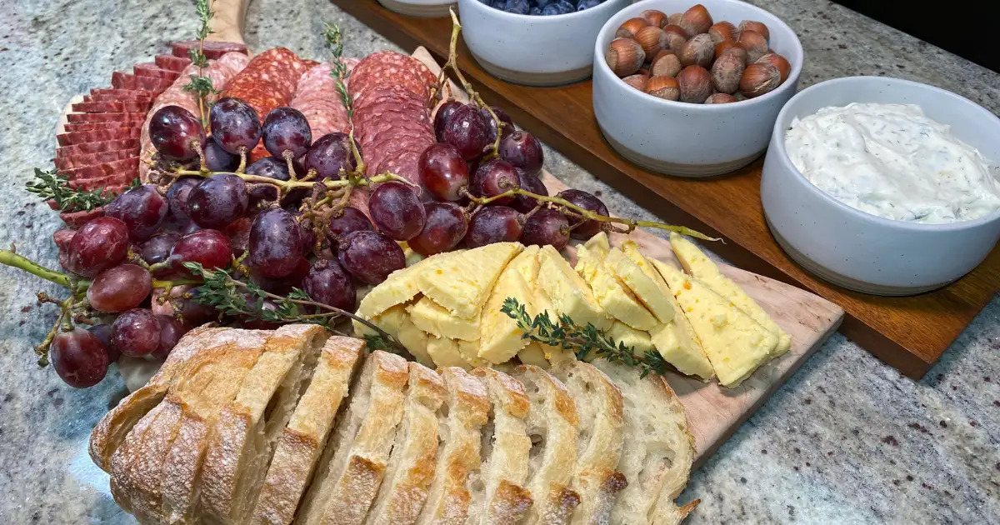

Hobbit-Inspired Elevenses Charcuterie

Description
A great adventuring day begins with a solid meal packed with protein and energy and that's just what you'll get from this spread of delicious meats, cheeses, fruit, and bread.
This charcuterie board is the perfect low-prep feast for your next adventuring day! Many of these ingredients are interchangeable so feel free to head to the local market and get creative with it!
Ingredients
- 1 stick Genoa Salame
- 1 stick Sopressata Salame
- 1 stick Calabrese Salame
- 1 stick Venison Salame
- 1 small wheel Apricot cheese
- 1 cup Blueberries
- 1 heaping pile seedless grapes
- 1 French Baguette
- 1 cup hazelnuts nutcracker made available
- 1 cup pepper jelly
- 1 cup tzatziki
- a few sprigs thyme
Directions
- Slice all your meats and lay them in clear rows next to each other so it is clear which is which
- Slice cheese and lay on far side of the board from the meat
- Slice bread and lay out next to the cheese. Toasting is optional but be careful not to make it too crunchy!
- Put the grapes in between the meats and bread/cheese to give them a visual separation of color
- Pour the remaining foods in separate cups
- Garnish the board with thyme for some rustic color